ALSYUNDAWY IT SOLUTION
SYSTEM ADMINISTRATOR MAGANG, HYPERVISOR, MAIL & DNS INFRASTRUCTURE SPECIALIST
OPISBOY | TEKNISI MAC & SERVER KELILING | SYSTEM ENGINEER | MAIL, DNS & ISP INFRASTRUCTURE SPECIALIST
ɪɴᴛᴇʀɴᴇᴛ ᴀᴅᴅɪᴄᴛ, ᴡɪɴᴅᴏᴡ, ᴍᴀᴄ & ʟɪɴᴜx ʟᴏᴠᴇʀ, ɪ ᴀᴍ ɴᴏᴛ ɢᴏᴏᴅ ᴍᴀɴ ʙᴜᴛ ᴛʜᴇ ᴍᴀɴ ɪɴ ɢᴏᴏᴅ ᴅᴀʏ & ɪ ᴀᴍ ᴏᴘɪsʙᴏʏ
AREA KEAHLIAN
ISP Hardware & System Infrastructure
System Engineer spesialisasi hardware infrastructure management dan system administration untuk ISP operations. Expert dalam server deployment, hardware maintenance, MikroTik RouterOS, bandwidth management, BGP routing, dan infrastructure monitoring dengan SLA 99.9% uptime.
DNS Infrastructure & RPZ Specialist
Expert implementation PowerDNS, BIND9, Unbound, dan Response Policy Zone (RPZ) untuk DNS filtering enterprise. Spesialisasi TrustPositif Komdigi integration, CDB binary lookup, DNSSEC validation, dnsdist load balancing, dan DNS performance optimization for high-traffic ISP networks.
DNS Filtering & Security TrustPositif
Implementasi advanced DNS filtering menggunakan TrustPositif database Kominfo/Komdigi RI. Expert dalam RPZ binary conversion, automated blacklist updates, whitelist management, multi-source threat intelligence feeds, dan DNS firewall dengan akurasi 99.9%.
Hypervisor & Virtualization
Advanced administration Proxmox VE, VMware vCenter, vSphere, ESXi, KVM, dan QEMU. Expert dalam VM orchestration, software-defined storage (Ceph/ZFS), HA clustering, disaster recovery, automated backup workflows, dan migration projects untuk 100+ virtual machines.
Mail, SMTP System & Security Hardening
Expert deployment dan management Zimbra Collaboration Suite (FOSS/Network Edition), Carbonio, Proxmox Mail Gateway, WHM cPanel, antispam (SpamAssassin, Rspamd), mail authentication (DKIM, SPF, DMARC, ARC), Postfix queue optimization, incident response, dan malware eradication.
Apple Mac Installation & Services
Certified specialist untuk instalasi, konfigurasi, maintenance, dan technical support Apple Mac ecosystem (Intel & Apple Silicon M1/M2/M3/M4). Expert dalam macOS deployment, system optimization, hardware upgrades, troubleshooting, MDM profile management, dan enterprise integration.
Network Monitoring & Analysis
Professional deployment and operation of Smokeping for latency monitoring, along with Uptime Kuma, Cacti, Paessler PRTG, Nagios, Zabbix, MRTG, Grafana, Prometheus, dan Netdata. Delivering comprehensive infrastructure visibility, SLA tracking, real-time alerting, dan capacity planning.
Linux System Administration
Deep expertise Ubuntu Server, Debian, FreeBSD, CentOS, Rocky Linux, dan AlmaLinux. Advanced Bash scripting untuk automation, system monitoring, security hardening, kernel sysctl tuning, systemd service orchestration, dan incident response dengan 10,400+ GitHub contributions.
PROYEK & REPOSITORY
Eradicate Zimbra Malware
Original CreationAutomated forensic analysis, webshell detection, malware disinfection, and threat eradication toolkit untuk Zimbra Collaboration Suite (CentOS/RHEL/Rocky/Ubuntu) dengan integrity verification, cronjob/SSH audit, dan security hardening.
Lihat RepositoryVisual Subnet Calculator
Maintained ForkInteractive visual subnet calculator fork dengan dukungan CIDR, VLSM, IPv4/IPv6, supernet aggregation, dark/light mode, dan export CSV/JSON. Dioptimalkan untuk ISP network engineering, NOC planning, dan training jaringan.
Lihat RepositoryESXi Unlocker v4
Maintained ForkVMware ESXi macOS/ARM Guest unlock utility untuk Proxmox VE, ESXi 7.x/8.x, dan KVM hypervisors. Memungkinkan virtualisasi Apple macOS di hypervisor non-Apple untuk tujuan development, testing, dan lab environments.
Lihat RepositoryZimbra Link Installer
Original CreationAutomated symlink installer untuk Zimbra Collaboration Suite CLI tools ke /usr/local/bin; mempermudah akses perintah zmcontrol, zmprov, zmlocalconfig, zmbackup, dan seluruh Zimbra binary tools tanpa PATH manipulation manual.
Lihat Repositoryzmbackup
Maintained ForkProduction Zimbra backup solution dengan dukungan full dan incremental backup, LDAP export, mailbox export via zmmailbox, rotasi retensi otomatis, dan upload ke S3-compatible storage atau SFTP remote server. Cocok untuk Zimbra FOSS & NE.
Lihat RepositoryZimbra2Zimbra Migration Tool
Original CreationAutomated migration toolkit untuk Zimbra-to-Zimbra (same-version dan cross-version); transfer mailbox, alias, domain, distribution list, kontak, dan kalender secara paralel menggunakan IMAP/ZMPROV tanpa downtime.
Lihat RepositoryTrustPositif To RPZ Binary
Original CreationHigh-performance converter untuk transform database TrustPositif Komdigi RI ke binary CDB & RPZ zone format PowerDNS / BIND9 dengan WhiteList support, deduplication, dan multi-threading.
Lihat RepositoryTrustPositif & Domain Blacklist
Original CreationComprehensive raw TrustPositif database dari Kementerian Komdigi RI dengan daily automated updates, domain sanitization, dan categorization siap pakai untuk DNS filtering.
Lihat RepositoryTrustPositif Validator
Original CreationEngine validasi domain paralel multi-core untuk sanitasi database TrustPositif; verifikasi RFC-compliant syntax, IANA TLD matching, dan domain normalization berkecepatan tinggi.
Lihat RepositorySunat Database TrustPositif Komdigi
Original CreationToolkit pembersihan dan normalisasi domain TrustPositif; mendeteksi record duplikat, wildcard sanitization, filtering TLD resmi IANA, dan penyeragaman format blacklist skala ISP.
Lihat RepositoryStevenBlack Blacklist RPZ
Original CreationAutomated converter hosts blacklist StevenBlack ke format Response Policy Zone (RPZ) BIND9 dan PowerDNS untuk pemblokiran adware, malware, telemetry, dan tracking domains skala ISP.
Lihat RepositoryThe Best Blocklist Collection
Maintained ForkKoleksi kurasi blocklist komprehensif untuk Pi-hole, AdGuard Home, dan DNS firewall; mencakup 5+ juta domain proteksi ancaman siber, phishing, dan malware dengan 100+ sumber terpercaya.
Lihat RepositoryHagezi DNS Blocklists
Maintained ForkMaintained fork Hagezi DNS-Blocklists; filter DNS bertingkat (Multi PRO, TIF, Threat Intelligence Feeds) untuk recursive resolver Unbound, PowerDNS Recursor, dan BIND9.
Lihat RepositoryPHP Looking Glass
Original CreationLightweight single-file PHP Looking Glass untuk diagnostik jaringan ISP; mendukung ping, traceroute, MTR, BGP route table lookup (BIRD/FRR), dual-stack IPv4/IPv6, dan CSP hardened.
Lihat RepositoryMikroTik Script Automation
Original CreationKumpulan script otomatisasi produksi MikroTik RouterOS; mencakup failover WAN, dynamic queue, auto-backup cloud, scheduler health check, dan netwatch alert notification via Telegram.
Lihat RepositoryMikroTik Blacklist
Original CreationAutomated threat intelligence feed updater untuk MikroTik RouterOS Address List; sinkronisasi real-time daftar IP berbahaya, scanner, brute-force attacker, dan bogon prefix.
Lihat RepositoryACL BIND9 DNS Indonesia + OpenIXP
Original CreationBash script generator Access Control List (ACL) BIND9 otomatis; mengagregasi prefix IP Indonesia dari APNIC delegated stats dan NICE OpenIXP routing table untuk recursive DNS filtering.
Lihat RepositoryDNS Performance Test
Forked & EnhancedAutomated DNS benchmark & latency testing tool; komparasi throughput, response time, dan cache resolution antara PowerDNS, BIND9, Unbound, Cloudflare, dan Google Public DNS.
Lihat RepositoryUFW Ipset Blocklist Auto Update
Original CreationHigh-speed firewall blocklist synchronization menggunakan Linux IPset dan UFW; menangani jutaan IP malicious/spammer dengan O(1) hash lookup tanpa membebani CPU server.
Lihat RepositoryPowerDNS Zone Backups
Original CreationAutomated disaster recovery & backup system untuk PowerDNS backend database (MariaDB/MySQL/PostgreSQL); dump berkala, rotasi retensi, dan verifikasi checksum zone.
Lihat RepositoryMicrosoft Office for macOS
Original Creation - 5.9k stars / 774 forksProduction installer & deployment script Microsoft Office LTSC untuk macOS (Universal binary: Apple Silicon M1-M4 & Intel) dilengkapi Volume License serializer; GPL-3.0 licensed.
Lihat RepositorySkipMDM macOS Bypass
Original CreationAutomated enrollment management utility untuk macOS (Monterey, Ventura, Sonoma, Sequoia); konfigurasi profil lokal dan manajemen endpoint Apple Silicon & Intel.
Lihat RepositoryPHP File & Directory Browser
Original CreationSingle-file PHP directory navigator hardened; dilengkapi session verification, path traversal prevention, MIME-type validation, SHA-256 integrity check, dan clean responsive UI.
Lihat RepositoryGeneric Shell Script Compiler (SHC)
Maintained ForkMaintained fork Generic Shell Script Compiler (SHC) dengan security auditing, compatibility fixes untuk GCC/Clang modern, dan optimasi enkripsi biner executable.
Lihat RepositoryZimbra Clean Outgoing Spam Queue
Original CreationAutomated Postfix mail queue scanner & compromised account detection script untuk Zimbra Collaboration Suite; menganalisis log autentikasi, memblokir akun spammer, dan membersihkan antrean.
Lihat RepositoryBash Script Uninstall Zimbra
Original CreationAutomated cleanup and uninstall shell script untuk Zimbra Collaboration Suite; membersihkan package, services (zmcontrol, mysqld, slapd, amavisd), systemd units, cron entries, dan direktori /opt/zimbra.
Lihat RepositoryZimbra to Carbonio Migration (Z2C)
Original CreationMigration toolkit dari Zimbra Collaboration Suite ke Carbonio CE / CB; otomatisasi ekspor dan impor domain, mailbox, email, alias, filter, distribution list, kontak, dan kalender secara paralel.
Lihat RepositoryNotepadNext for macOS
Maintained ForkNative cross-platform reimplementation Notepad++ untuk macOS; dibangun dengan modern Qt, mendukung syntax highlighting, regex search, multi-tab editing, dan performa tinggi.
Lihat RepositoryXiaomi ADB & Fastboot Tools
Maintained ForkDiagnostic & flashing toolkit untuk perangkat Xiaomi Android via ADB/Fastboot di Windows; optimasi driver, debloating bloatware, flash recovery, dan partition rescue.
Lihat RepositoryOpenVPN Road Warrior Installer
Maintained ForkMaintained fork OpenVPN Road Warrior installer dengan dual-stack IPv4/IPv6, Unbound DNS resolver lokal, modern cipher suites (AES-GCM / ChaCha20-Poly1305), security hardening, dan manajemen client.
Lihat RepositoryPHP-PDNSManager
Original CreationEnterprise DNS Management Web GUI & REST API Gateway untuk PowerDNS Authoritative Server — PHP 8.1+, arsitektur PSR berstandar industri (PSR-7, PSR-11, PSR-14, PSR-15, PSR-18), RBAC, dan automasi zona DNS skala besar.
Lihat Repositorybailu-kilo-agent
Original CreationAgentic coding sidebar for BAILU AI — Kilo-style panel, model picker, Auto, thinking mode, and API token integration for VS Code & Code-OSS forks.
Lihat RepositoryPHP-BindManager
Original CreationEnterprise-grade Web GUI untuk manajemen BIND9 DNS Server — PHP 8.4+, Bootstrap 5, Tailwind CSS, SQLite3, RBAC, DNSSEC, dan REST API.
Lihat RepositoryDisable-MacOS-Updates
Original CreationReversible Bash scripts untuk menonaktifkan pembaruan perangkat lunak otomatis pada macOS (Monterey hingga Golden Gate); kontrol penuh pembaruan sistem tanpa gangguan pada DAW & render workstation.
Lihat RepositoryOpenSSL 1.0.2 Hardened Fork
Maintained ForkProduction-grade security hardened fork dan backported CVE mitigations untuk legacy OpenSSL 1.0.2 (hingga 1.0.2zr) dengan strict ANSI C89/C90 compliance dan 37+ CVE audited & hardened.
Lihat RepositoryPear Desktop Mac
Maintained ForkHigh-performance, privacy-hardened macOS desktop application untuk YouTube Music dengan built-in ad blocker (27+ vendor filters), SponsorBlock, real-time synced lyrics, dan plugin kustom untuk Apple Silicon (M1-M4) & Intel x64.
Lihat RepositoryPNetLab v8
Original CreationEnterprise network virtualization & emulation platform berbasis Ubuntu 26.04 LTS (Resolute); turn-key OVA, ISO, dan panduan deployment Proxmox VE 8+ / VMware ESXi untuk mendesain dan memvalidasi topologi jaringan multi-vendor.
Lihat RepositoryPowerDNS-Admin-PHP
Original CreationEnterprise Authoritative PowerDNS Web Control Plane dalam Native PHP & PDO tanpa framework eksternal. Akselerasi bootstrap <1ms, arsitektur offline Zero-CDN, autentikasi 2FA RFC 6238 TOTP, multi-server node clustering, APCu caching, dan integrasi PowerDNS HTTP API v1.
Lihat RepositorySubnetCalc for macOS
Maintained ForkAplikasi kalkulator subnet IPv4 & IPv6 native macOS berkinerja tinggi berbasis Swift & AppKit Cocoa (Universal 2: Apple Silicon M1-M4 & Intel x64). Dilengkapi 25 developer theme suites, kalkulasi CIDR/VLSM, netmask, wildcard mask, dan navigasi menu hierarkis.
Lihat RepositorySubNetCalc Electron
Original CreationKalkulator subnetting IPv4 & IPv6 presisi tinggi dan hemat memori untuk macOS & lintas platform. Dibangun dengan Electron 44, Node 24, React 19, dan TypeScript; mendukung 14 multi-theme, klasifikasi RFC, visualisasi bit biner, dan kalkulasi CIDR real-time.
Lihat RepositoryTUTORIAL & PANDUAN TEKNIS
Panduan praktis, arsitektur server, instalasi, dan dokumentasi sistem untuk administrasi jaringan, mail server, dan infrastruktur ISP.
Build Zimbra FOSS
Panduan komprehensif build Zimbra Collaboration 10.1.20 FOSS dari source (zm-build) untuk Ubuntu Server 24.04 LTS dan Rocky Linux 9: dependency, tag release, build.pl, installer .tgz, validasi, instalasi testing, DNS, firewall, dan security baseline.
Buka TutorialCacti Monitoring Stack
Panduan instalasi Cacti network graphing tool pada Debian dengan Apache/Nginx pada root domain.
Buka TutorialHyperGlass
Panduan instalasi hyperglass BGP Looking Glass modern berbasis Python dengan integrasi routing daemon (Bird, FRR, Quagga, OpenBGPD), Nginx reverse proxy, Redis, dan Netmiko automation.
Buka TutorialInstall Zimbra FOSS
Panduan instalasi Zimbra Collaboration 10.1.20 FOSS pada Ubuntu Server 24.04 LTS dan Rocky Linux 9 / AlmaLinux 9: DNS, firewall, install.sh, post-install, security baseline, dan validasi.
Buka TutorialOokla Speedtest Server
Deployment OoklaSpeedtest Server versi produksi dengan konfigurasi Dual-Stack IPv4 & IPv6 dan systemd.
Buka TutorialOpenVPN Road Warrior
Panduan instalasi OpenVPN Road Warrior dual-stack IPv4/IPv6 di Debian, Ubuntu, AlmaLinux, Rocky, CentOS, Fedora dengan Unbound DNS, security hardening, dan manajemen client.
Buka TutorialPHP PowerAdmin
Instalasi PowerDNS Authoritative dengan antarmuka web Poweradmin untuk manajemen zone DNS, Master-Slave replication, REST API, DNSSEC, dan kontrol akses berbasis peran.
Buka TutorialPHP-LookingGlass
Alat diagnostik jaringan single-file PHP untuk pemeriksaan ping, traceroute, BGP route lookup, dan DNS resolution dengan dukungan IPv4/IPv6 dan Dark/Light mode UI.
Buka TutorialphpIPAM
Panduan instalasi phpIPAM open-source IP Address Management untuk manajemen alamat IP, VLAN, subnetting, dan dokumentasi jaringan dengan automated IP scanning.
Buka TutorialPowerDNS-Admin Debian 13
Konfigurasi Master-Slave PowerDNS dengan web interface PowerAdmin untuk skema DNS redundan ISP.
Buka TutorialPowerDNS-Admin Ubuntu 22.04
Panduan otomatisasi dan manual PowerDNS Authoritative dengan backend MariaDB 10.11 dan Web Admin UI (Flask).
Buka TutorialPrometheus & Grafana
Stack monitoring infrastruktur lengkap dengan Prometheus, Node Exporter, Grafana, dan Zabbix 7.0.
Buka TutorialProxmox VE 9
Panduan instalasi dan konfigurasi Proxmox VE 9 pada Debian serta Ubuntu dengan setup cluster, storage, dan VM/container.
Buka TutorialTrustPositif To RPZ Binary
Panduan instalasi BIND9 DNS Filtering dengan Response Policy Zone TrustPositif Komdigi: auto-install, multi-source database, WhiteList, Google SafeSearch, dan hardening keamanan.
Buka TutorialvSphere Unsupported HW
Panduan instalasi dan upgrade VMware vSphere / ESXi pada perangkat keras server yang tidak didukung secara resmi.
Buka TutorialWalkieFleet Server
Panduan lengkap instalasi WalkieFleet Push-to-Talk server pada Linux Debian & Ubuntu.
Buka TutorialPNETLab v8 Ubuntu 26.04
Panduan lengkap install, upgrade existing, dan deploy PNETLab v8 Unofficial di Ubuntu 26.04: dedicated mirror repo.alsyundawy.com (ISO, OVA, Netinstall, bundle tgz), network installer, held packages, systemd leftovers, UFW, dan security baseline.
Buka TutorialPNETLab v4 · v5 · v6 Klasik
Panduan lengkap install, upgrade berjenjang, dan deploy PNETLab klasik v4/v5/v6 dengan skrip rev3 Alsundawy dan path LabHub terverifikasi untuk Ubuntu Bionic & Focal.
Buka TutorialKETERAMPILAN TEKNIS
ISP Hardware & System Infrastructure
Server hardware management, system administration, infrastructure monitoring, MikroTik RouterOS, hardware troubleshooting, system optimization, bandwidth management, VPN configuration (WireGuard, OpenVPN, IPsec), network equipment maintenance, Ubiquiti UniFi, BGP peering, OSPF routing
DNS Infrastructure & Architecture
Authoritative and recursive DNS, PowerDNS (Authoritative & Recursor), BIND9, Unbound, Knot DNS, dnsdist load balancer, DNSSEC signing & validation, Response Policy Zone (RPZ), Constant Database (CDB), zone transfers (AXFR/IXFR), EDNS client subnet, DNS caching & amplification mitigation
DNS Filtering & Threat Intelligence
TrustPositif Komdigi RI integration, RPZ binary CDB format, automated blacklist/whitelist sync, multi-source threat intelligence feeds (Hagezi, StevenBlack), DNS firewall policy, DNS cache poisoning defense, Google SafeSearch enforcement, AdGuard Home & Pi-hole integration
Hypervisor & Enterprise Virtualization
Proxmox VE (PVE cluster, Ceph, ZFS storage), VMware vCenter, VMware vSphere, VMware ESXi, KVM (Kernel-based Virtual Machine), QEMU, Hyper-V, VirtualBox, VM lifecycle orchestration, live migration, HA clustering, disaster recovery, automated snapshot backup, V2V migration
Mail Systems, SMTP Architecture & Security
Zimbra Collaboration Suite (FOSS & NE), Carbonio CE/CB, Proxmox Mail Gateway (PMG), WHM/cPanel, Postfix, Dovecot, SpamAssassin, Rspamd, Amavisd-new, ClamAV antivirus, DKIM, SPF, DMARC, ARC verification, Postfix queue management, compromised account mitigation, Zimbra CVE remediation & webshell eradication
Apple macOS Enterprise Services
macOS deployment & configuration, Apple Silicon (M1/M2/M3/M4) and Intel optimization, macOS Server, Time Machine backup workflows, FileVault encryption, Apple Remote Desktop, Homebrew package management, MDM profile configuration, Mac hardware maintenance, enterprise directory integration
Telemetry, Monitoring & Observability
Smokeping latency telemetry, Uptime Kuma infrastructure monitoring, Cacti, Paessler PRTG, Nagios Core, Zabbix 7.0 LTS, MRTG, Grafana dashboards, Prometheus, Node Exporter, Netdata, network SLA analysis, real-time alerting (Telegram/Discord/Webhook), syslog aggregation, capacity planning
Linux System Administration
Ubuntu Server (20.04/22.04/24.04 LTS), Debian (11/12/13), FreeBSD, CentOS, Rocky Linux 8/9, AlmaLinux 8/9, system hardening, kernel sysctl tuning, systemd unit management, package management (APT, DNF, YUM), SELinux, AppArmor, Fail2ban, UFW, IPset, iptables, nftables
Scripting, Automation & DevOps
Advanced Bash scripting (Zsh/Dash), Python automation (Netmiko, Paramiko, Requests), AWK, SED, Grep, cron scheduler automation, Ansible playbooks, log parsing & regex analysis, Git version control, CI/CD workflows, Docker containerization, Docker Compose
Security Hardening, Forensics & Incident Response
Webshell detection (JSP, PHP, WAR), malicious cronjob and SSH authorized_keys audit, package binary integrity verification (dpkg -V, rpm -V), mail spam queue cleanup, CVE patch validation, TLS/SSL hardening, CSP nonce architecture, OWASP security baseline
KLIEN LIST
Perusahaan dan organisasi yang telah mempercayai layanan profesional kami
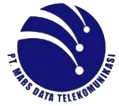
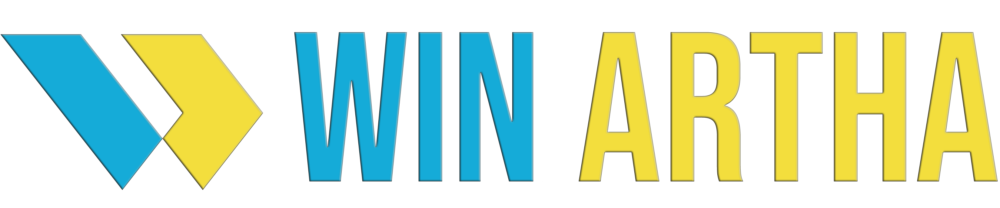
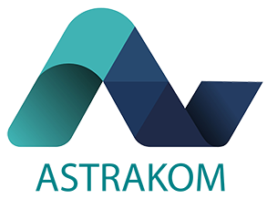
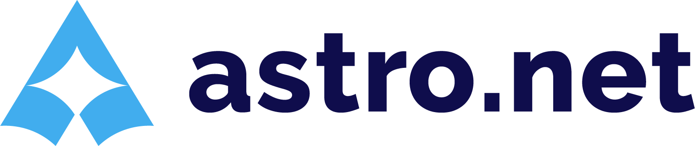
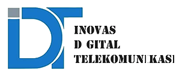
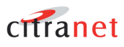
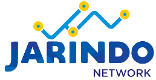
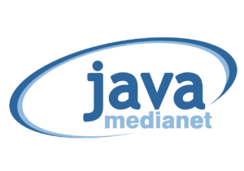
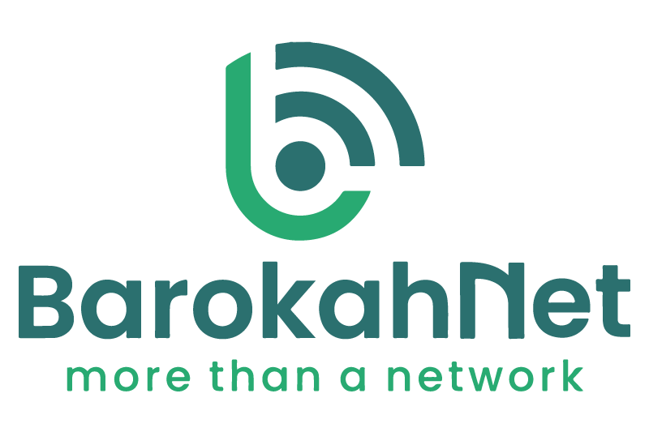
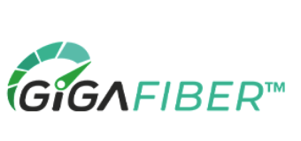
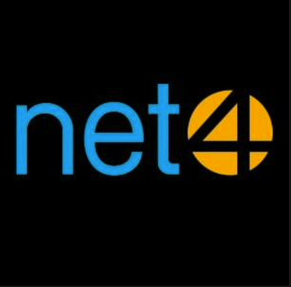
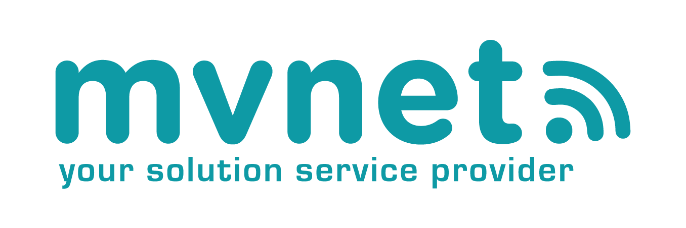
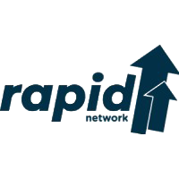
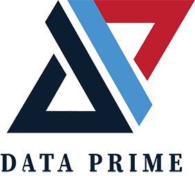
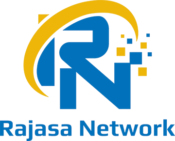
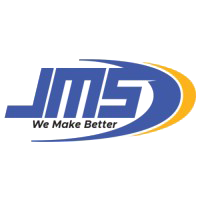
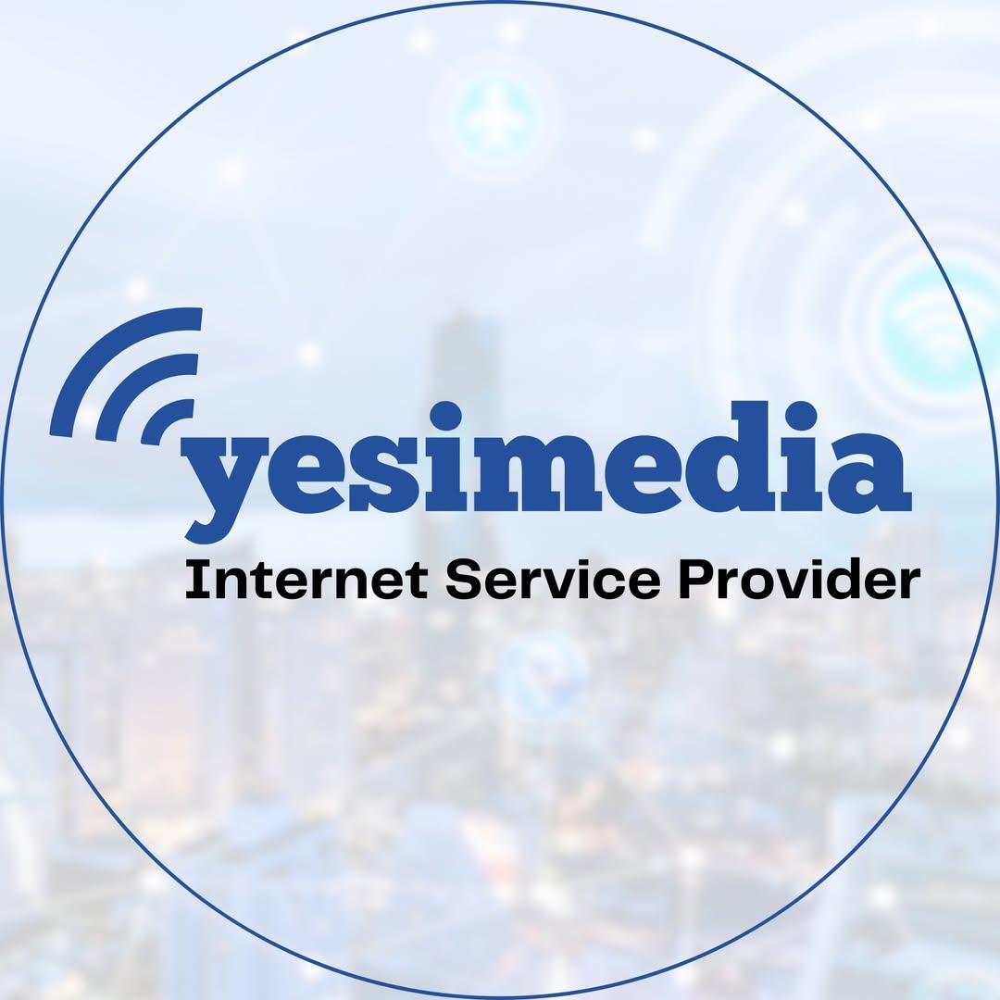
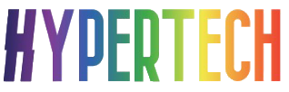
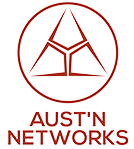
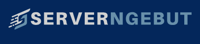
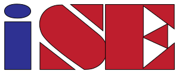
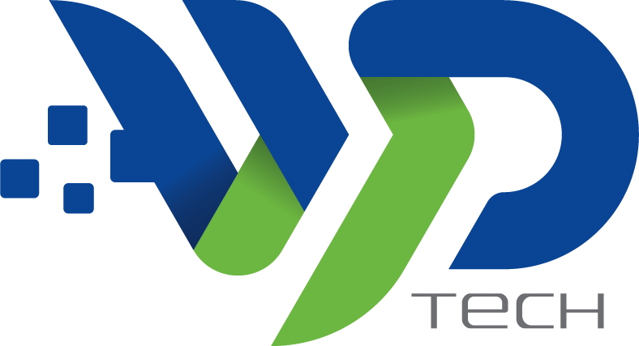
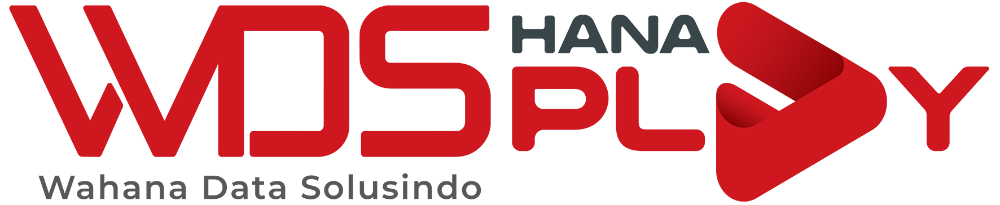
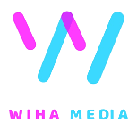
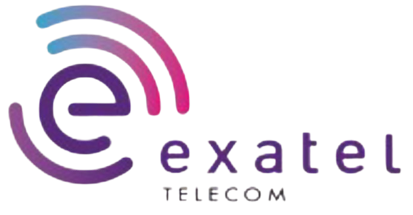
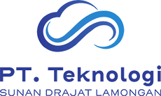
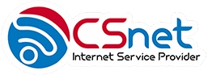
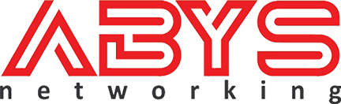
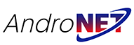
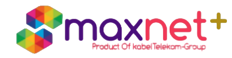
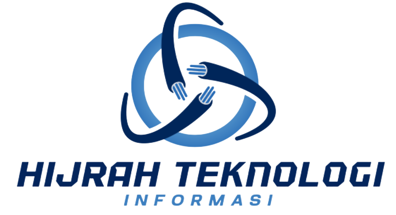
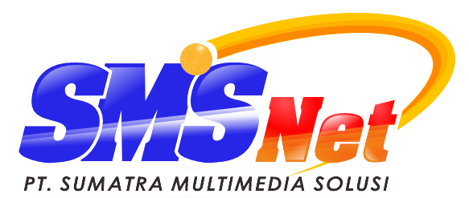
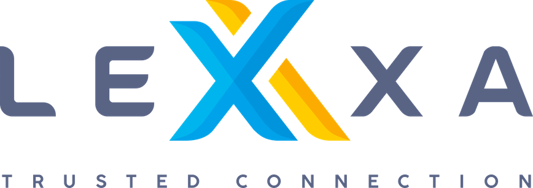
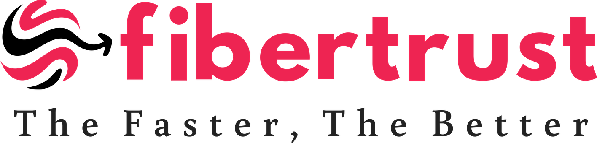
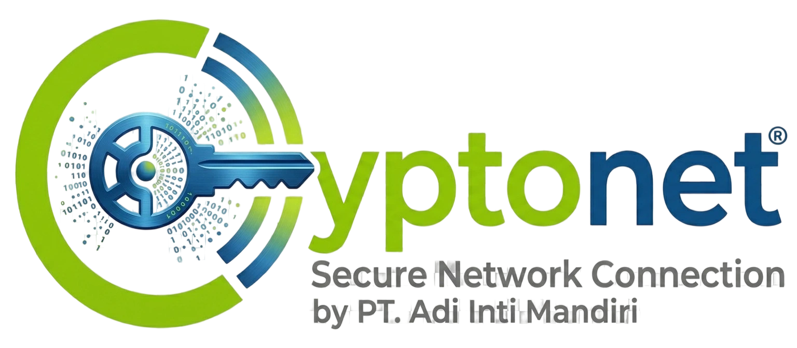
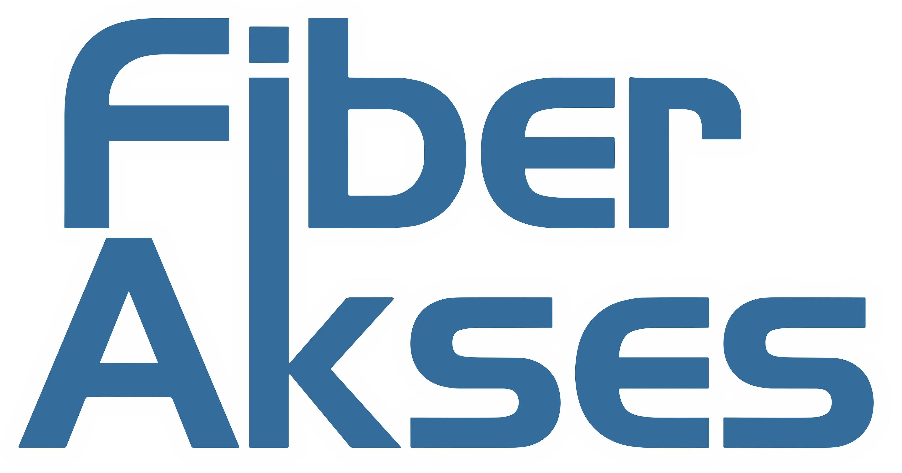
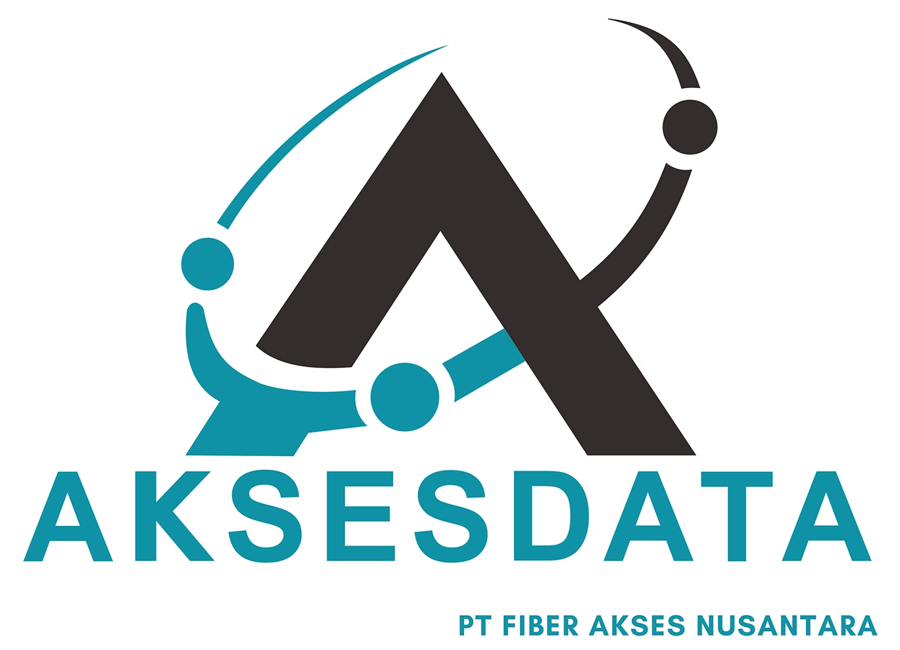
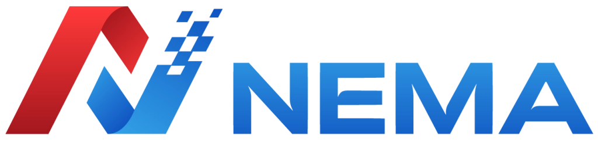
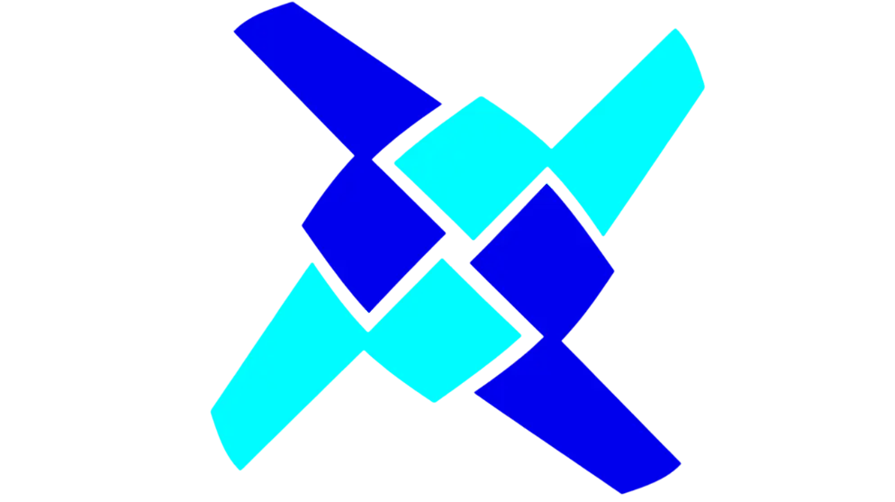
DIDUKUNG OLEH
Yang mendukung dan memberikan support layanan profesional kami
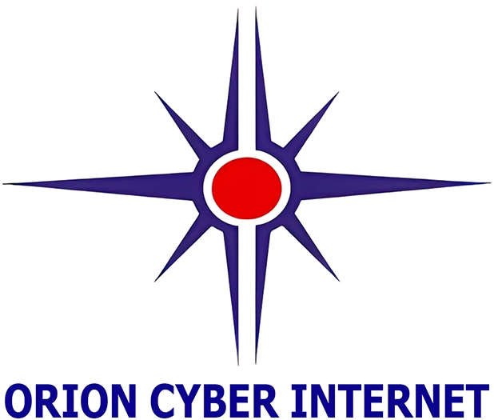
MARI TERHUBUNG, BEKERJA SAMA & BERKOLABORASI
Tertarik Berkolaborasi?
Saya terbuka untuk kerja sama dan diskusi teknis di bidang System Administration, DNS Infrastructure, Mail Systems, Incident Response, dan Apple Mac Services, termasuk system & network operations, hypervisor management, ISP hardware, TrustPositif implementation, Zimbra hardening & malware eradication, MikroTik configuration, serta kolaborasi proyek open source. Mari diskusikan kebutuhan Anda dan implementasi solusi yang tepat guna untuk mendukung bisnis maupun proyek jangka panjang Anda.